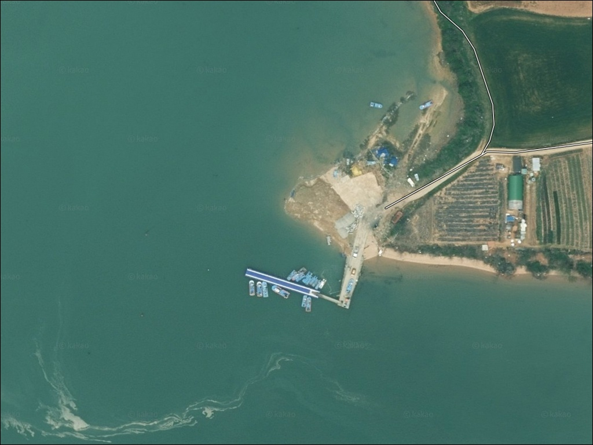
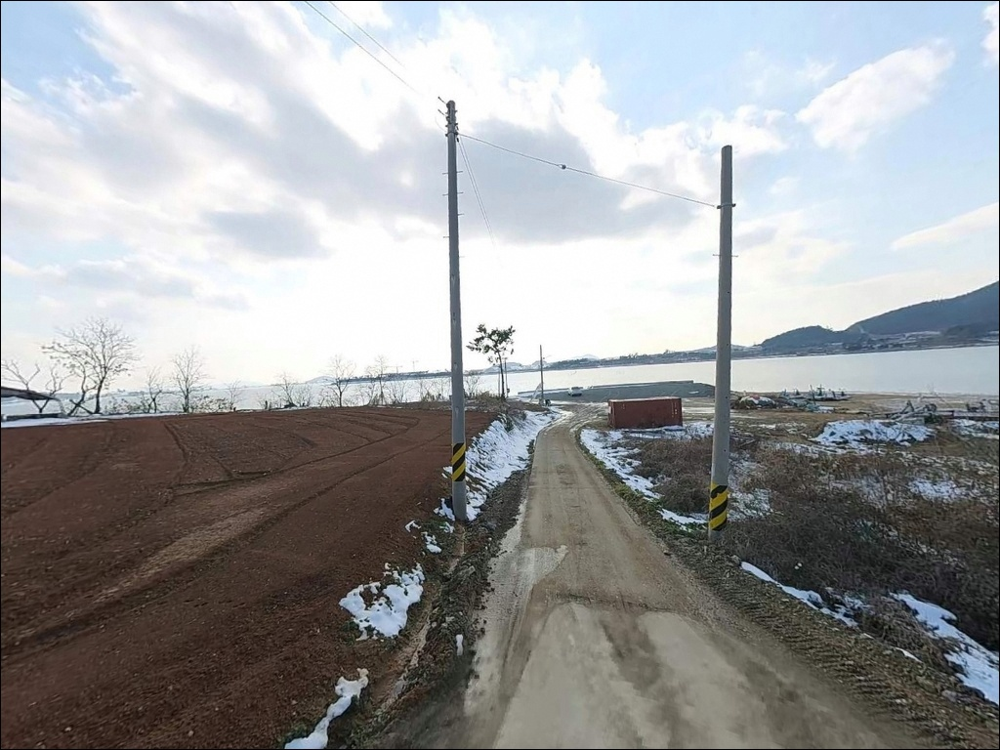
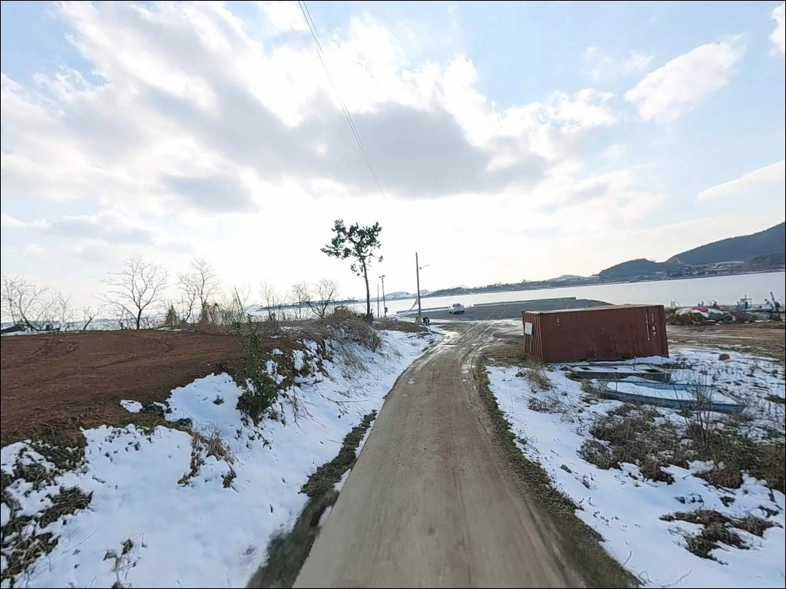
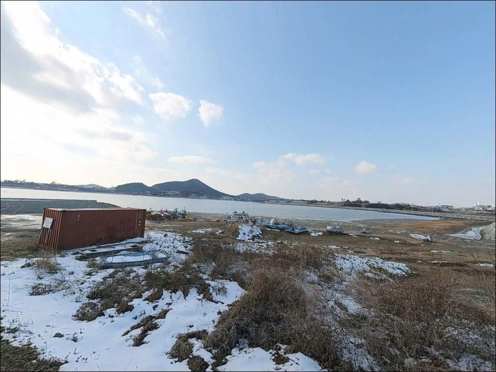
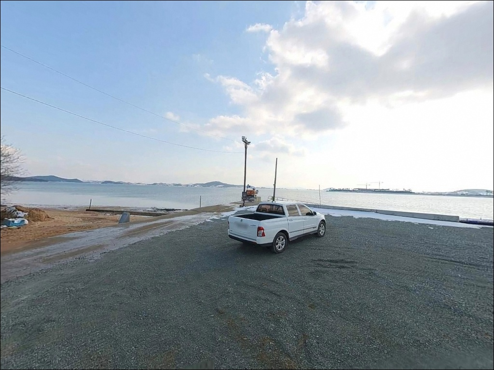
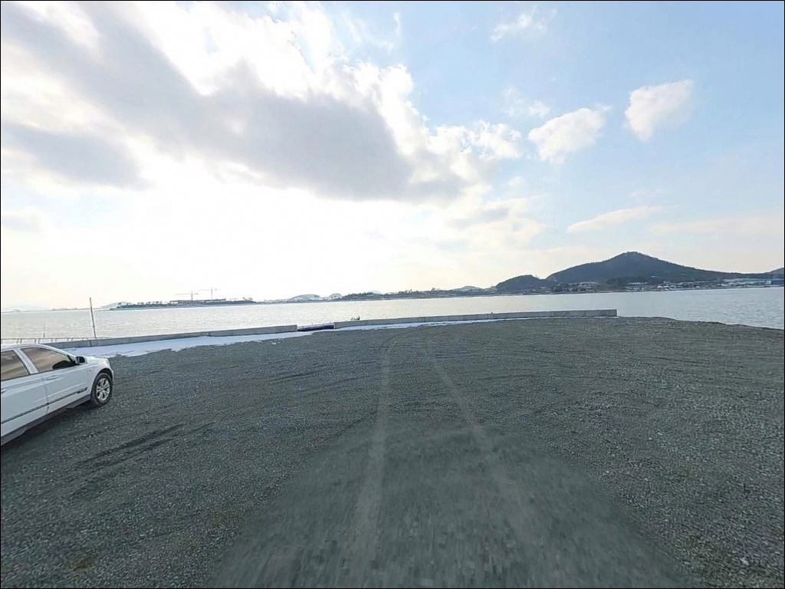
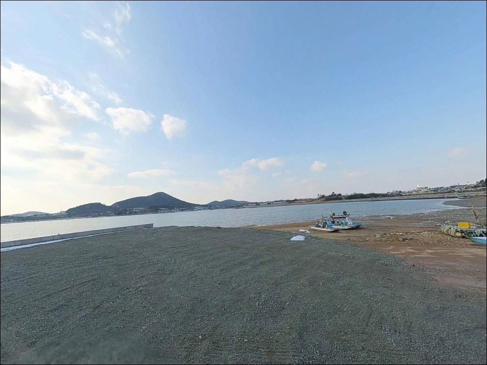
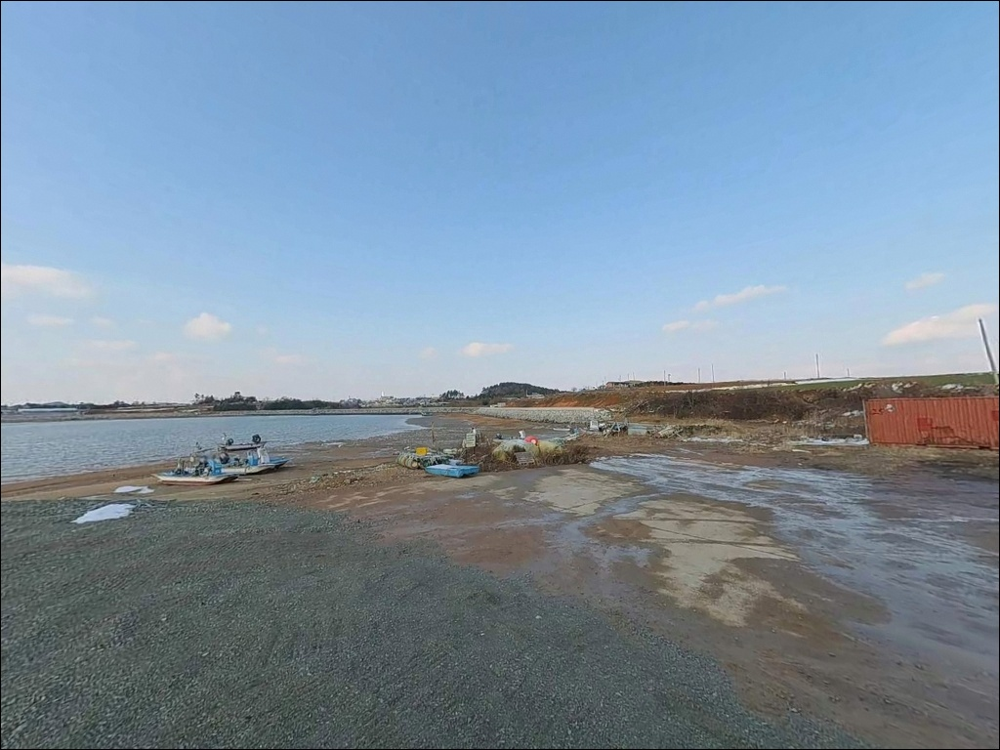
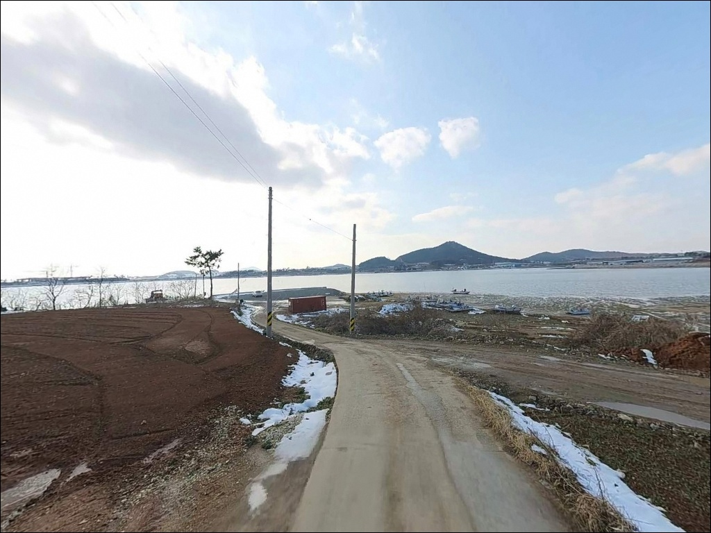

복룡리 선착장, 전남 신안군 자연의 여백을 느낄 수 있는 차박, 낚시 명소


포인트 안내
복룡리 선착장
전남 신안군 압해읍 복룡리 883-8
복룡리 선착장을 처음 찾는 낚시인이
가장 많이 틀리는 판단은
계절과 날씨만 보고 출발하는 것입니다.
서해안 갯벌 구조 특성상
간조 시 수면 자체가 사라지는 환경으로,
물때를 확인하지 않으면
낚시 자리 자체가 만들어지지 않습니다.
압해도 북서쪽 해안에 자리한 이 선착장은
나룻가 선착장으로도 불리며,
ㄷ자 형태의 소형 구조물과
앞쪽으로 형성된 물골이
이 포인트의 핵심 지형 조건입니다.
조류가 들어오는 타이밍에
물골 방향을 공략하는 방식이
이 포인트의 기본 접근법입니다.
이 글은 복룡리 선착장의
진입 환경, 물때 기반 낚시 여건,
차박 체류 조건에 집중합니다.
조황 단정이나 특정 어종 보장은
이 글의 범위에 포함되지 않습니다.

1. 진입 동선과 포인트 접근성
압해도는 압해대교로 육지와 연결되어 있어
차량 진입 자체에 큰 어려움은 없습니다.
다만 복룡리 선착장까지는
압해읍 내부 도로를 거쳐
마을 안쪽 소로를 따라 진입하는 구조입니다.
진입로 폭이 넉넉하지 않은 구간이 있어
출발 전 위성지도로 경로를 확인하는 것이
기본입니다.
선착장 끝단 쪽은 회차 공간이 넉넉하지 않습니다.
대형 SUV나 캠핑카 등 차체가 긴 차량은
마을 진입 전에 도로 폭과
회차 가능 여부를 반드시 확인해야 합니다.
소형~중형 차량 기준으로
선착장 앞 갓길에 1~2대 주차가
가능한 수준입니다.
어선 이동 동선을 막지 않는 자리가 우선이며,
어업 활동 공간과 낚시 공간의 경계를
현장에서 직접 파악한 뒤
자리를 잡는 것이 기본 매너입니다.

2. 차박 환경과 야간 체류 여건
복룡리 일대는 소규모 어촌 마을로,
야간 차량 통행이 많지 않습니다.
민가와의 거리가 가까운 편이어서
완전한 프라이버시보다는
조용한 체류에 가까운 환경입니다.
가로등 밀도가 낮아
개인 조명 장비는 반드시 챙겨야 합니다.
선착장 앞 공간이 협소해
차박을 메인 목적으로 삼기에는
자리 확보가 쉽지 않습니다.
낚시를 마친 뒤 하룻밤 조용히 머무는 용도로는
나쁘지 않은 편이지만,
어선 작업 시간 전에 자리를 비울 준비가
기본 체류 매너입니다.
서해안 갯벌 특성상 조차가 커
기상에 따라 바람 영향을 받는 경우도 있습니다.
출발 당일 기상 예보를 다시 한번 확인하는 것이
체류 여건 판단의 기준이 됩니다.


3. 주변 편의시설 및 인프라 현황
복룡리 선착장 반경 3km 이내에는
편의점이나 마트가 없습니다.
완전 자급 체제로 진입하는 것이
이 포인트 방문의 기본 조건입니다.
식수, 얼음, 낚시 소품, 연료 모두
출발 전에 갖춰야 합니다.
압해읍 중심 방향으로 약 5km 이동하면
학교리 일대에 편의점을 이용할 수 있습니다.
부족한 소품이 있다면
진입 전 이 동선을 먼저 거치는 것이
가장 효율적인 준비 경로입니다.
선착장 인근에 횟집이 위치해 있으나
운영 여부는 방문 전 직접 확인이 필요합니다.
응급 상황 대비를 위해
비상약품과 응급 연락처는 사전에 준비해
두는 것이 안전합니다.

4. 진입 전 반드시 챙겨야 할 준비사항
복룡리 선착장 방문에서
가장 먼저 확인할 것은 물때입니다.
서해안 특성상 간조 시 갯벌이 드러나는 환경으로,
낚시 여건이 만들어지는 시간대는
초들물에서 중날물 사이로 집중됩니다.
바다타임에서 복룡리 기준 물때를 확인하고
들물 시작 1~2시간 전에 현장에 도착하는 것이
기본 전략입니다.
서해안 갯벌 환경에서 안전을 위해
구명조끼는 낚시 중 반드시 착용합니다.
야간 낚시 시에는 헤드랜턴을 필수로 챙기고,
갯벌 가장자리 보행 시
발이 빠질 수 있는 뻘 구간에 주의해야 합니다.
선착장 구조물 위에서만 낚시하는 방식이
야간 안전을 확보하는 기본입니다.
선착장 앞 해상에 암초 이력이 있는 구간이므로
수중 지형을 모르는 상태에서의
웨이딩은 피하는 것이 좋습니다.
어선 출입 시간대를 미리 파악하고
작업 방해가 되지 않는 자리를
선택하는 것이 이 포인트의 기본 매너입니다.

5. 지형이 만드는 낚시 여건 — 물때가 판단 기준입니다
복룡리 선착장 일대는 압해도 북서쪽 해안에서
목포 방면 수로를 끼고 있는 구조입니다.
ㄷ자형 선착장 앞쪽으로 물골이 형성되며,
들물 타이밍에 조류가 물골 안으로 유입되면서
낚시 여건이 갖춰지는 구조입니다.
반대로 간조 시에는 갯벌이 드러나
낚시 가능한 수면 자체가 사라집니다.
바닥 저질은 펄(mud)이 주를 이루어
밑걸림은 적은 편입니다.
물골 방향으로 채비를 던지면
바닥 변곡 구간을 탐색할 수 있으며,
선착장 구조물 주변도
어종이 은신하기 좋은 지형 조건을
갖추고 있습니다.
조류 소통이 활발한 타이밍과
정조 타이밍의 어종 반응 차이가 큰 지형이므로,
바다타임에서 확인한 물때를 기준으로
입장 시각을 정하는 것이
이 포인트를 제대로 공략하는 방법입니다.
최신 조황은 가기 전에 꼭 검색해 보시기 바랍니다.


6. 포인트에 어울리는 낚시 스타일
이 포인트 지형에 가장 잘 맞는 방식은
원투낚시입니다.
펄 바닥에서 활동하는 붕장어와 숭어,
들물에 물골 안으로 진입하는 어종을
노리는 방식입니다.
청갯지렁이나 참갯지렁이 미끼를 사용해
물골 방향으로 채비를 길게 던지는
것이 기본 접근법입니다.
루어낚시도 이 구조에서 시도해볼 만합니다.
야간 들물 타이밍에 물골 입구를
미노우 계열 루어로 천천히 훑는 방식으로,
농어가 물길을 따라 진입하는 시간대를 노립니다.
선착장 구조물 주변 모서리 구간도
탐색 가치가 있는 자리입니다.
찌낚시는 들물에 조류가 만들어지는 구간에서
유효합니다.
발밑 수심이 얕은 구조라
근거리 공략에 집중하는 방식이 현실적입니다.
볼락과 노래미 등 선착장 주변을 노리는
라이트게임 방식을 함께 운영하면
다양한 시간대를 커버할 수 있습니다.

7. 대안 포인트와 플랜 B 동선
복룡리 선착장의 낚시 여건이 기대에 못 미치거나
공간 여건이 여의치 않을 때는
가룡선착장이 첫 번째 대안입니다.
북서쪽으로 약 2.5km 거리에 위치하며,
복룡리보다 규모가 크고
시설이 정비되어 있어
진입과 주차 여건 모두 안정적인 편입니다.
신장리 선착장(압해도선착장으로도 검색)도
같은 압해도 해안선 안에서
접근 가능한 대안 포인트입니다.
낚시 자료가 상대적으로 더 많이 알려진 곳으로,
복룡리 선착장을 처음 탐색한다면
신장리를 기점으로 복룡리를 병행 탐색하는
동선이 효율적입니다.
차박 공간이 부족할 경우
송공항 주차장이 대안 체류지가 됩니다.
압해도 서쪽 끝단에 위치하며
주차 공간이 비교적 넓어
낚시와 차박을 동시에 검토하기에
더 나은 여건을 갖추고 있습니다.

들물 타이밍을 알면
복룡리 선착장이 달라 보입니다
서해 갯벌 낚시에 익숙하고
들물 타이밍에 맞춰 탐색하는 방식을
즐기는 낚시인에게
복룡리 선착장은 조용한 포인트로 잘 맞습니다.
아직 온라인에 많이 알려지지 않은 선착장으로,
직접 발품을 들여 물골 구조를 파악해두면
반복 방문에서 가능성이 열리는 곳입니다.
반면 물때 계산 없이 방문하거나
원투 거리 이상의 깊은 수심 포인트를 기대한다면
맞지 않는 구조입니다.
공간도 협소해 여러 사람이 함께 낚시하기보다
1~2인 탐색형 출조에 어울리는 규모입니다.
편의시설 없는 소규모 어촌 선착장 곁에서
들물 타이밍을 기다리며 하룻밤 조용히 머무는 방식이라면,
낚시와 차박을 잇는 서해 탐색형 출조지가 될 수 있습니다.